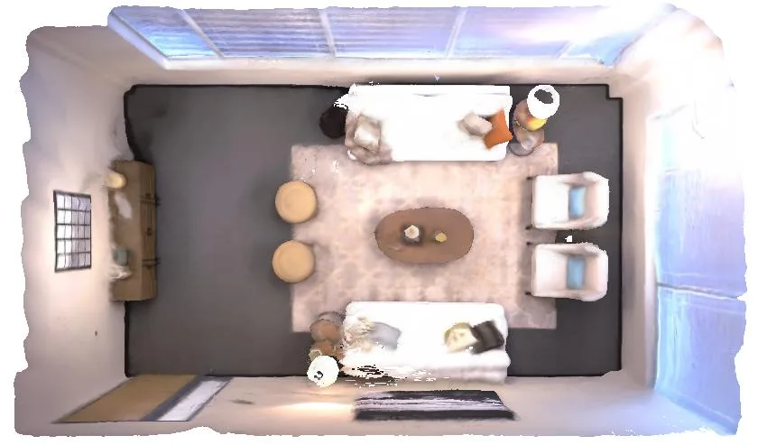
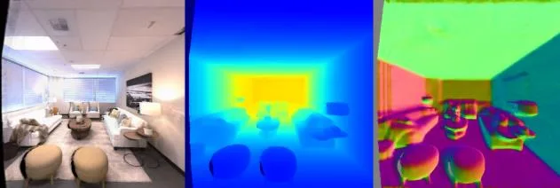
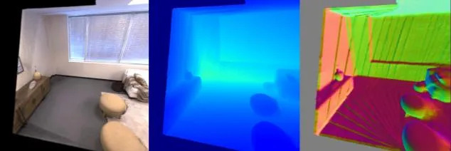
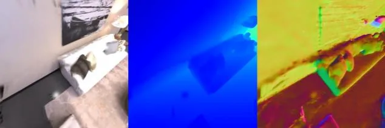
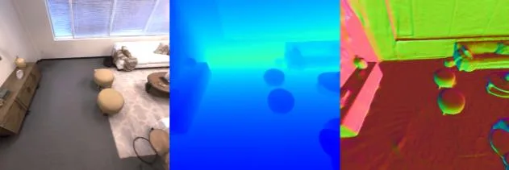
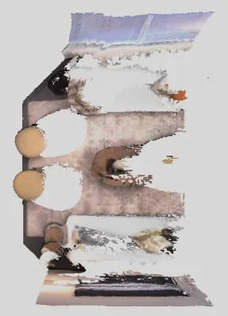
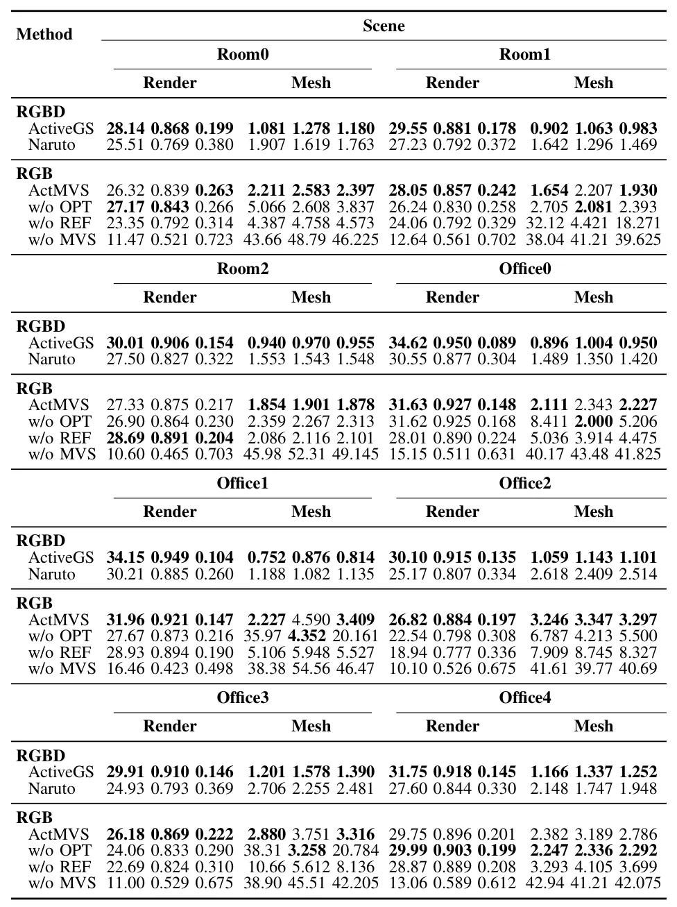

ActMVS：面向主动场景重建的单目多视图立体ActMVS: Active Scene Reconstruction with Monocular Multi-View Stereo
高度贴合机器人在线建图、主动感知和轻量平台三维重建，是今天最强相关论文之一。
一句话工作总结
把单目 MVS 推向主动探索闭环，使轻量机器人能够在线重建并维护可规划占据地图。
摘要
ActMVS 面向机器人和 UAV 的主动三维重建，目标是在没有深度传感器的情况下边规划轨迹边生成可用于避障的高置信占据地图。方法通过 view factor graph 组织多视角深度预测，并加入全局深度优化，使单目输入也能在线输出较一致的 dense depth map。
Active scene reconstruction enables robots/UAVs to autonomously plan trajectories and reconstruct environments without costly manual data acquisition. Unlike passive methods, active reconstruction requires real-time construction of high-confidence occupancy maps for collision-free navigation. Existing approaches rely on depth sensors for occupancy map updates, increasing platform cost and weight. To advance spatial intelligence, we aim for a vision-only monocular solution. However, current monocular scene reconstruction methods operate offline and fail to deliver globally consistent dense depth at the frame rates required for robots/UAVs navigation. To bridge this gap, we introduce ActMVS, the first framework for monocular active reconstruction. Our framework integrates a view factor graph construction for informed Multi-View Stereo depth prediction, along with a global depth optimization, to enable the online generation of high-quality, globally consistent dense depth maps. This enables monocular robots/UAVs to maintain reliable occupancy maps for safe trajectory planning during reconstruction. Experiments on Replica datasets demonstrate performance competitive with RGB-D methods. Our code and data are available at https://github.com/TrickyGo/ActMVS.
中文解读摘录
- 日期：2026-06-02
- 链接：arXiv / PDF
- 作者简写：Z. Zhu, D. Yuan, F. Wang 等
- 领域标签：主动三维重建 / 单目 MVS / 机器人探索 / 占据地图
- 背景/动机：主动重建要求机器人一边规划轨迹一边维护可避障的高置信占据地图，但现有方法常依赖深度传感器；单目方案成本低、重量轻，却难以实时输出全局一致 dense depth。
- 主要创新点/工作：构建 view factor graph 来组织多视角深度预测，并加入全局深度优化，使单目机器人/UAV 能在线生成一致的 dense depth map，用于安全轨迹规划和环境重建。
- 为什么值得关注：这是今天最贴近“机器人在线建图闭环”的论文之一。它把单目 MVS 从离线重建推进到主动探索场景，可作为轻量 UAV/移动机器人无深度传感器建图方案的重点跟踪对象。
图表/页面预览
{kind=link}

{kind=link}

{kind=link}

{kind=link}

{kind=link}

{kind=link}

{kind=link}
